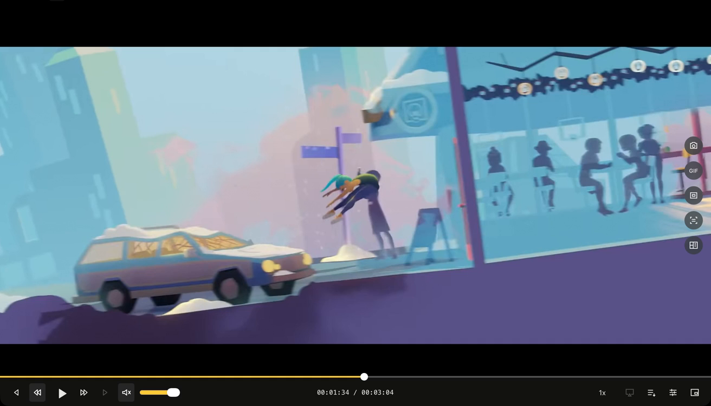
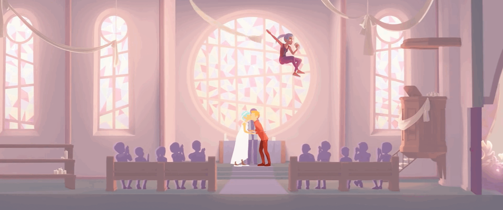
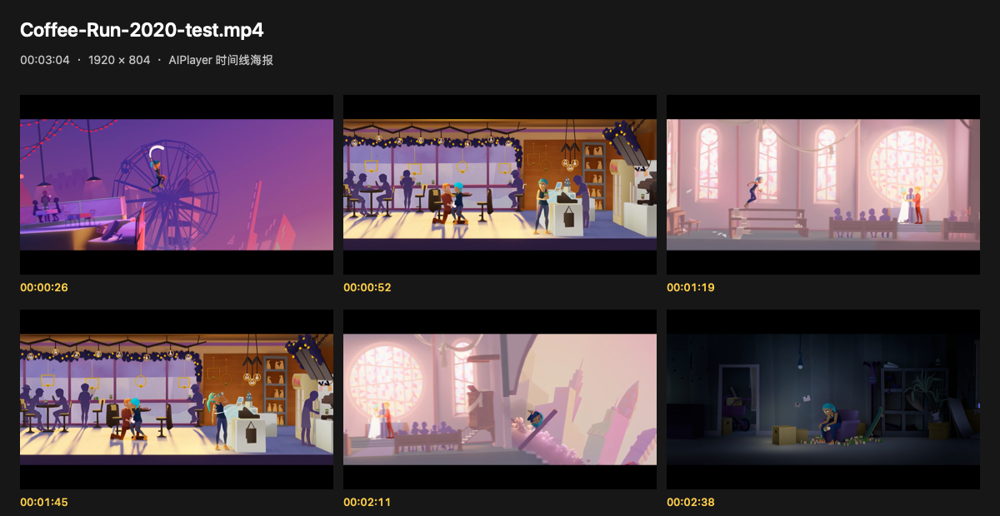

搜索、选源与视频链接
在工作区搜索片名，比较可用来源；也可直接打开有权访问的视频链接。来源可管理，不保证永远可用。
在线功能与边界 ↗macOS · V1.1.2 公开预览
搜索想看的，按自己的节奏观看。
再把喜欢的画面，变成截图、GIF、视频片段，
或一张值得分享的电影海报。
Apple Silicon · macOS 13.5+ · 免费软件
ad-hoc 签名，未经 Apple 公证的预览版

ONE PLAYER. MORE POSSIBILITIES.
从找到想看的，到沉浸观看，再到留下精彩。
这是一个播放器，也是随手记录和分享的工具箱。
在工作区搜索片名，比较可用来源；也可直接打开有权访问的视频链接。来源可管理，不保证永远可用。
在线功能与边界 ↗打开或拖入媒体文件，使用队列、进度定位、快进后退、速度和音量控制。原生 libmpv 负责播放。
播放控制详解 ↗全屏专注画面，或切换画中画留在桌面一角。观看模式按当前媒体与系统支持情况使用。
观看模式详解 ↗保存当前画面，或识别字幕、对白等画面文字。OCR 使用 macOS Vision 本机处理，不是云端剧情分析。
截图与 OCR 详解 ↗把喜欢的片段导出为视频，保存到本机影片文件夹。是否可导出取决于来源与格式；本版不支持字幕烧录。
片段导出详解 ↗当前版以真实片名、已看画面、本地模板推荐和项目二维码生成 1200 × 1800 竖版 PNG。
海报生成详解 ↗GIF RECORDING / 精彩分享工具之一
想把精彩做成动图？试试4K GIF录制。
作为分享工具之一，它让你在观看时直接保留动态片刻。
选择「4K（3840）」，保留高分辨率源的细节。16:9 UHD 源可输出 3840 × 2160；其他比例按源比例保留，不把低分辨率画面强行放大。

公开源码已有真实 UHD 源导出 3840 × 2160 的逐帧解码验证。4K 更占内存、时间和磁盘；实际采样受源帧率与机器性能限制，最终 GIF 有调色板色彩限制。
阅读既有验证记录 ↗SEE IT WORK / 来自真实软件
看一段真实操作，再选适合你的记录方式。
GIF 留住动作，海报整理画面；不同瞬间，不同表达。
4.47 秒原速连续实录，无音轨。展示录制设置及保存提示；不是4K导出性能演示。
9.97 秒原速连续实录，包含生成等待过程。展示历史时间线海报；当前版竖版海报见功能详解。
以上为 build15 历史宣传实录，不代表 V1.1.2/build18 本次重新录屏或全功能验收。演示影片 Coffee Run：(CC) Blender Foundation | studio.blender.org，CC BY 4.0。影片已节选、静音及缩放；无第三方背书。素材与版本说明 ↗
EXPORTED BY AIPLAYER
原宣传材料中的软件真实导出样例。它们与上方操作实录来自不同批次，不宣称点击后即时生成了这些文件。
GIF 样例：1920 × 804 / 3 帧 / 约 0.73 秒，非4K。
海报样例：历史 1200 × 620 六帧时间线拼图，非当前竖版样例。


演示影片：(CC) Blender Foundation | studio.blender.org · CC BY 4.0 · 画面节选及 GIF / 拼图转换，非影片权利转让。
另保留最多 6 张已看画面，每张最长边 1200 像素。以上不含解码器及应用内存；不是永久离线下载，超限片段可能需要重新联网。首个关键帧组未完整时，不保证断网回退。
文件菜单打开本地媒体或视频链接，也可以拖入媒体文件。
定位片段，调整播放速度。4K GIF 请选择高分辨率源，并切换到 4K 档。
GIF 点击启停，截图或海报一键生成；分享前确认画面及文字的使用权。
关于名字中的 AI
AI 是品牌名称。V1.1.2 尚未接入模型服务，海报推荐为本地模板，不是语义剧情分析。没有默认模型密钥、云账号或无限免费 AI 承诺。
能力与费用边界 ↗好画面，值得留下。
macOS Apple Silicon · 不含影视内容包